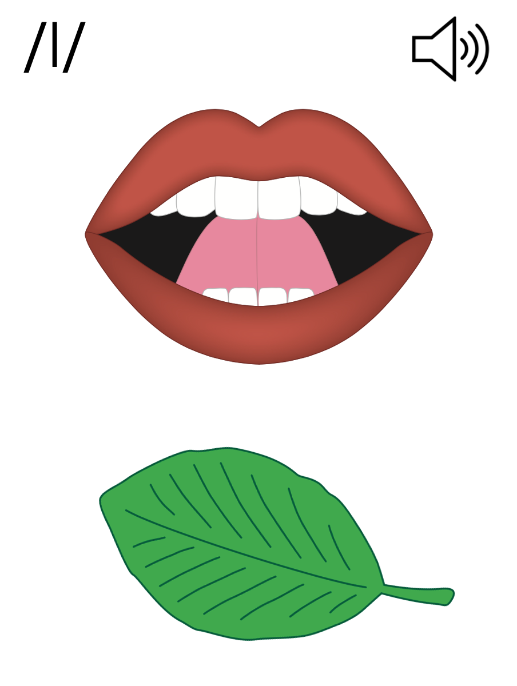
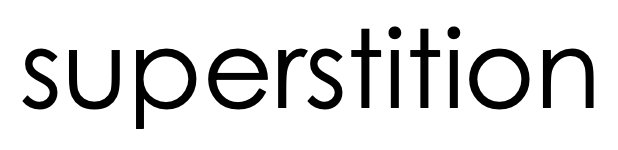
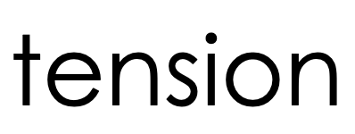
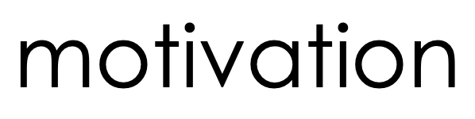
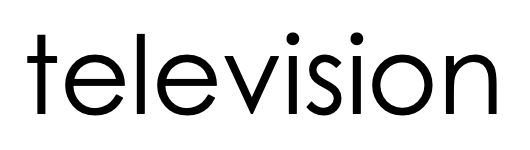
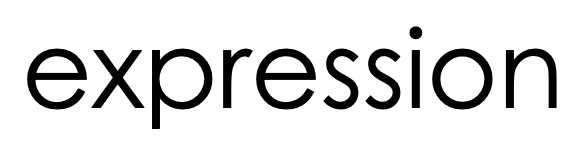
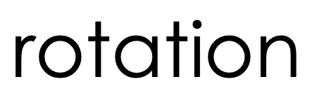
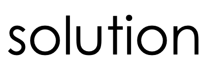
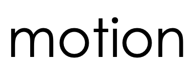
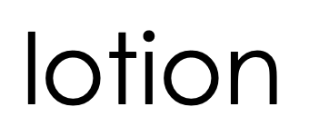

Lesson 119
-sion, -tion

ufliteracy.org


Lesson 119
-sion, -tion


See UFLI Foundations lesson plan Step 1 for phonemic awareness activity.


See UFLI Foundations lesson plan Step 2 for student phoneme responses.


ch
gn
gh
c
g
ough
ew
eu
ue
ou
ei
eigh
ey
aigh
air
are
ear
our
or
ar
-ed


See UFLI Foundations lesson plan Step 3 for auditory drill activity.

No slides needed for auditory drill.


See UFLI Foundations lesson plan Step 4 for blending drill word chain and grid.
Visit ufliteracy.org to access the Blending Board app.


See UFLI Foundations lesson plan Step 5 for recommended teacher language and activities to introduce the new concept.
Syllables
Words or word parts with one vowel sound.
Final Stable Syllables
__ le
apple
puzzle

Final Stable Syllables
-sion
-tion
-sion
vision
diversion
-sion
passion
extension
-tion
fiction
question
ro
ta
tion
**display in slideshow mode for animations

division

fraction
portion
section
question
invasion
vision
decision
confusion
equation

See UFLI Foundations lesson plan Step 5 for words to spell.
Handwriting paper to model spelling.

See UFLI Foundations lesson plan Step 5 for words to spell.
Handwriting paper for guided spelling practice.


Insert brief reinforcement activity and/or transition to next part of reading block.

Lesson 119
-sion, -tion

New Concept Review

See UFLI Foundations lesson plan Step 5 for recommended teacher language and activities to review the new concept.
Syllables
Words or word parts with one vowel sound.
Final Stable Syllables
__ le
apple
puzzle
Final Stable Syllables
-sion
-tion
-sion
vision
diversion
-sion
passion
extension
-tion
fiction
question
ro
ta
tion
**display in slideshow mode for animations
nation
portion
vision
question


See UFLI Foundations lesson plan Step 6 for word work activity.
Visit ufliteracy.org to access the Word Work Mat apps.










Display this slide in editing mode. Click and hold to drag words into the appropriate box.


See UFLI Foundations lesson plan Step 7 for irregular word activities.
The white rectangle under each word may be used in editing mode. Cover the heart and square icons then reveal them one at a time during instruction.

See UFLI Foundations manual for more information about reviewing irregular words.
guess
Lesson 117+
UE represents the /ĕ/ sound, or U is silent.
The white rectangle under the word may be used in editing mode. Cover the heart and square icons then reveal them one at a time during instruction.
guest
Lesson 117+
UE represents the /ĕ/ sound, or U is silent.
The white rectangle under the word may be used in editing mode. Cover the heart and square icons then reveal them one at a time during instruction.
guide
Lesson 117+
UI represents the /ī/ sound, or U is silent.
The white rectangle under the word may be used in editing mode. Cover the heart and square icons then reveal them one at a time during instruction.
young
Lesson 118+
OU represents the /ŭ/ sound.
The white rectangle under the word may be used in editing mode. Cover the heart and square icons then reveal them one at a time during instruction.
touch
Lesson 118+
OU represents the /ŭ/ sound.
The white rectangle under the word may be used in editing mode. Cover the heart and square icons then reveal them one at a time during instruction.
Handwriting paper for irregular word spelling practice. Use as needed.
See UFLI Foundations manual for more information about reviewing irregular words.
Teach
The orange star indicates these are new irregular words that need to be introduced.
See UFLI Foundations manual for more information about teaching irregular words.
enough
Lesson 119+
In some dialects, E represents /ī/ or /ə/ sound.
OU represents the /ŭ/ sound.
GH represents the /f/ sound.
Alternatively, O represents the /ŭ/ sound, and UGH represents the /f/ sound.
The white rectangle under the word may be used in editing mode. Cover the heart and square icons then reveal them one at a time during instruction.
tough
Lesson 119+
OU represents the /ŭ/ sound.
GH represents the /f/ sound.
Alternatively, O represents the /ŭ/ sound, and UGH represents the /f/ sound
The white rectangle under the word may be used in editing mode. Cover the heart and square icons then reveal them one at a time during instruction.
rough
Lesson 119+
OU represents the /ŭ/ sound.
GH represents the /f/ sound.
Alternatively, O represents the /ŭ/ sound, and UGH represents the /f/ sound
The white rectangle under the word may be used in editing mode. Cover the heart and square icons then reveal them one at a time during instruction.

Handwriting paper for irregular word spelling practice. Use as needed.
See UFLI Foundations manual for more information about teaching irregular words.


See UFLI Foundations lesson plan Step 8 for connected text activities.
It is time for an excursion because we
have worked enough.
They are on a mission to stop the invasion!
Reading fiction and watching television are my passions.
See UFLI Foundations lesson plan Step 8 for sentences to write.

The UFLI Foundations decodable text is provided here. See UFLI Foundations decodable text guide for additional text options.
The Audition
Today is a big day for Matilda. The theatre club is holding auditions for the school play. Acting is Matilda’s passion. She is auditioning for the lead role. This year’s play is about a mission to outer space. It is packed with action and ends with a real explosion!
Matilda walked into the theatre club meeting. She excitedly handed her permission slip to the director and found a seat. She listened as the director explained how the audition would work.
“Remember to be creative and use your imaginations. Any questions before we begin?”
No questions. Everyone was ready to begin. The students took turns auditioning for the director. There was a lot of competition, but Matilda did a great job! Once the auditions were finished, the director announced the parts.
“This was a tough decision,” she said. “You each made a great impression. The lead role goes to... Matilda!” Matilda leaped out of her seat with joy. Her friends clapped for her. She could not wait to run home and start memorising her lines.

Insert brief reinforcement activity and/or transition to next part of reading block.